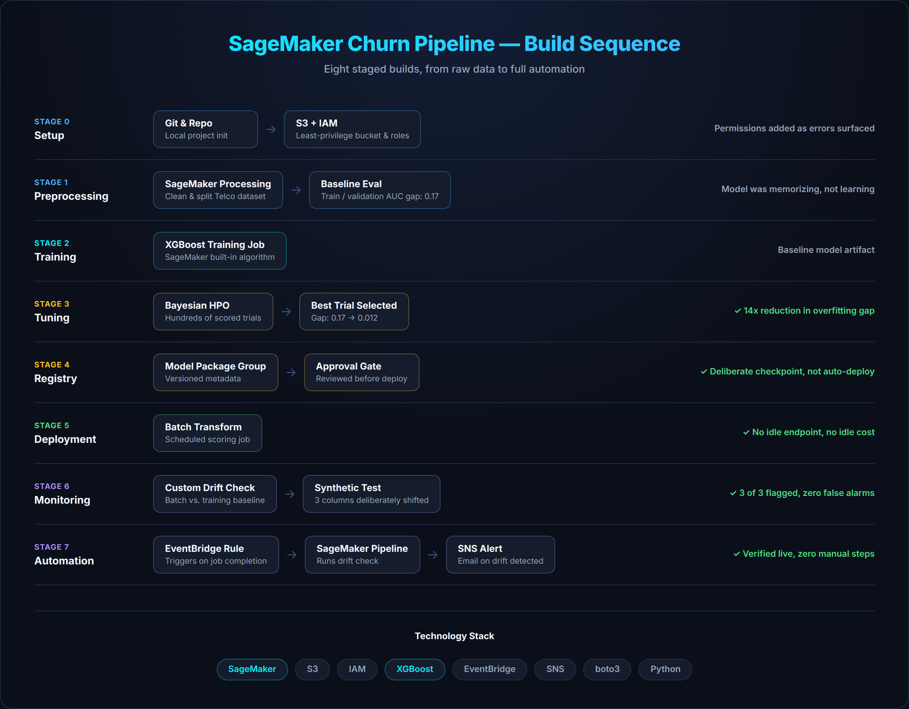
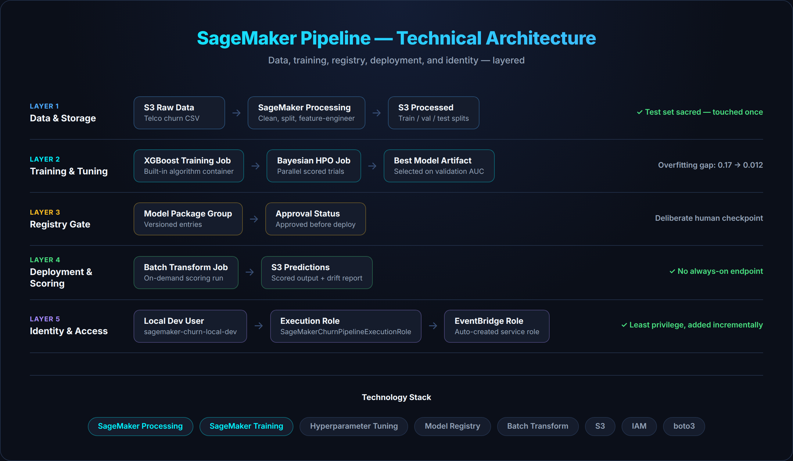
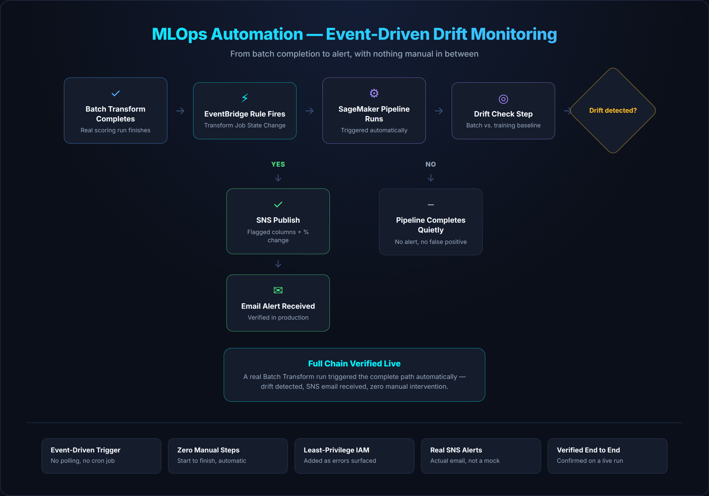

SageMaker Churn Prediction Pipeline
An end-to-end, production-grade MLOps pipeline built on AWS SageMaker
The Challenge
Most portfolio ML projects stop at a notebook with a good accuracy score. This project was built to go the rest of the way: a customer-churn predictor on the IBM Telco dataset, taken through every stage a real production model needs — preprocessing, training, automated tuning, a versioned registry gate, cost-aware deployment, drift monitoring, and full automation — all on a single AWS account, built and secured one brick at a time.
⚡ Impact
Diagnosed a wide train/validation AUC gap during initial evaluation and closed it from 0.17 to 0.012 — a 14x reduction — through automated Bayesian hyperparameter tuning. The production drift monitor was then validated against a synthetic batch with known ground truth, correctly flagging all 3 deliberately altered columns with zero false positives on the data left unchanged.
Workflow Overview

The pipeline runs as eight staged builds: environment and IAM setup, preprocessing, training, hyperparameter tuning, model registry, deployment, drift monitoring, and MLOps automation — each stage built, run, inspected, and documented before moving to the next.
Key Features
Automated Hyperparameter Tuning
A Bayesian search across hundreds of configurations, each scored against held-out data, closed the overfitting gap by more than an order of magnitude without manual trial and error.
Cost-Aware Deployment
Batch Transform was chosen over a real-time endpoint to match a periodic-scoring workload — no idle infrastructure, no idle billing between runs.
Self-Monitoring Pipeline
A custom drift-detection check compares new batches against training baselines, replacing a managed service that's built for real-time endpoints and no longer open to new customers.
Technical Architecture

The platform combines SageMaker Processing, Training, and Hyperparameter
Tuning jobs with a Model Registry gate, S3-backed artifacts, and
least-privilege IAM spanning three distinct identities — each permission
added only as a real AccessDenied error surfaced, never
granted up front.
MLOps Automation

The final stage ties the system together: an EventBridge rule fires on real Batch Transform completions, triggering a SageMaker Pipeline that runs the drift check and publishes results to SNS — verified end to end in production, with zero manual intervention.
Event-Driven Trigger
EventBridge listens for Batch Transform completions and triggers the drift-monitoring Pipeline automatically — no polling, no cron job, no manual step.
Least-Privilege IAM
Permissions were added incrementally against real access-denied errors across three distinct identities, rather than granted from a broad managed policy up front.
Verified End to End
A real production run confirmed the full chain: a batch completes, drift is detected, and an SNS alert email arrives — with nothing manual in between.
Technology Stack
Project Status
This project is maintained in a private repository. It was built as a structured, end-to-end MLOps exercise — from raw data through automated production monitoring — on a single AWS account, with security and cost treated as first-class design constraints throughout.